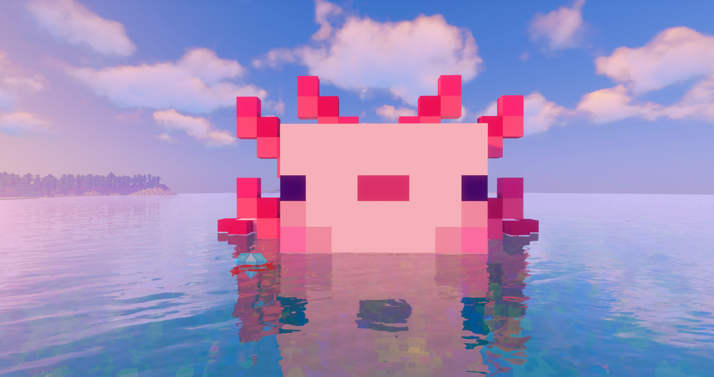
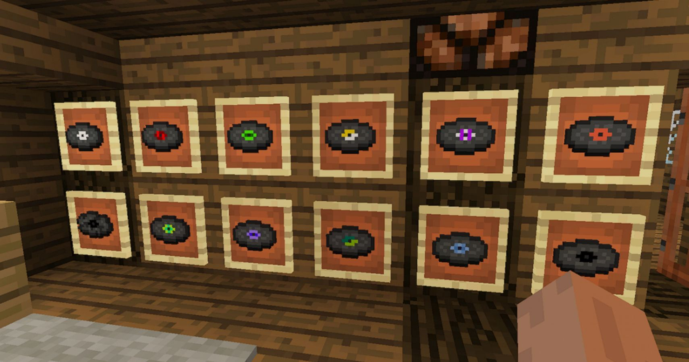

Artigos em Destaque
Descubra curiosidades que tornam o Minecraft ainda mais especial!

O Creeper
O Creeper surgiu por acidente. Durante o desenvolvimento do jogo, Notch errou as proporções ao criar um porco. Em vez de descartar o modelo, ele o transformou no Creeper.
O Nether
O Nether é um dos lugares mais perigosos e misteriosos do jogo.

Axalotes
Os Zxalotes são mods raros e podem te ajudar na água!

Discos Musicais
Existem vários discos musicais excondidos pelo mundo.

Mods
Melhore sua experiência

Biomas
Descubra novos biomas

Mobs
Conheça os mobs

Curiosidades
Fatos incríveis sobre Minecraft